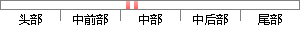

区块链的共享价值被众多的加密货币，如比特币、莱特币、以太币等所效仿，并在工作量证明和加密算法上做了许多改进，如采用Proof-of-stake、Scrypt算法等。
片段位置图

相似结果|
1
原句片段： 区块链的共享价值被众多的加密货币，如比特币、莱特币、以太币等所效仿，并在工作量证明和加
相似片段 1：并在2009年创立了比特币社会网络,开发出第一个区块,即“创世区块”。 区块链共享价值体系首先被众多的加密货币效仿,并改进了工作量证明和算法,如采用...
相似片段 2：当下,在区块链、比特币等虚拟币如此火爆的情况下,无数公司闻风而动。比如...自此之后,区块链共享价值体系首先被众多的加密货币效仿,并在工作量证明上和...
相似片段 3：中本聪在2008年,于《比特币白皮书》中提出“区块链”概念,并在2009年创立...区块链共享价值体系首先被众多的加密货币效仿,并在工作量证明上和算法上进行...
相似片段 4：区块链共享价值体系首先被众多的加密货币效仿,并在工作量证明上和算法上进行了改进,如采用权益证明和SCryptc算法。随后,区块链生态系统在全球不断进化,出现了首次代币...
相似片段 5：区块链共享价值体系首先被众多的加密货币效仿,并在工作量证明上和算法上进行了改进,如采用权益证明和SCrypt算...
相似片段 6：区块链共享价值体系首先被众多的加密货币效仿,并在工作量证明上和算法上进行了改进,如采用权益证明和SCrypt算法。随后,区块链生态系统在全球不断进化,出...
|
※ 片段修改建议 ※
近似词参考：- 共享：同享
- 价值：代价
- 众多：浩繁 浩瀚
- 货币：货泉 钱币 钱银 泉币
- 证明：证实
- 许多：很多
- 改进：改良 改善 革新
- 采用：采取 接纳 采纳
系统自动生成语句： 区块链的同享代价被浩繁的加密货泉，如比特币、莱特币、以太币等所效仿，并在工作量证实和加密算法上做了很多改良，如采取Proof-of-stake、Scrypt算法等。
注：本片段修改建议为系统自动生成，仅供参考。